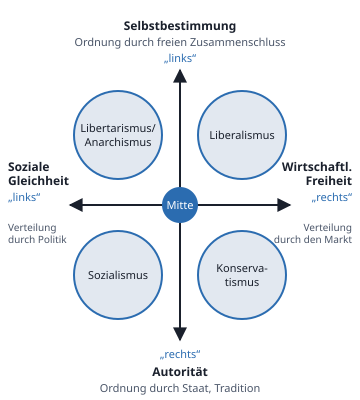

Das Links-Rechts-Schema
Mit einem KI-Tutor lernen
Ein KI-Tutor erklärt dir diese Seite und hilft dir bei den Aufgaben. Wähl deinen Assistenten:
Mit Claude öffnen Mit ChatGPT öffnen Mit Mistral Vibe öffnen
Du nutzt dein eigenes Konto beim Anbieter. Der Assistent ist kein Angebot von lernapps.net: lernapps liefert nur Inhalte und Aufgaben. Die Wahl gilt für alle Seiten, nur auf diesem Gerät.
Kurz ausprobiert
Nach dieser Seite kannst du die vier Grundorientierungen in ein Schema mit zwei Achsen eintragen – und dich selbst auch.
Aufgabe
Lösung
Unten, bei Autorität richtige Antwort
Der Konservatismus setzt auf Ordnung durch Staat, Familie und Religion – also Autorität.
Oben, bei Selbstbestimmung
Oben liegen Grundorientierungen, die auf freien Zusammenschluss setzen, etwa der Anarchismus.
Wer überlieferte Autoritäten bewahren will, steht auf der Seite der Autorität.
Das steckt dahinter
Waagerecht – die Verteilungskonfliktlinie: Verteilt die Politik die Güter (soziale Gleichheit) oder der Markt (wirtschaftliche Freiheit)?

Das Links-Rechts-Schema. Lies jedes Feld als Kombination aus beiden Achsen.
Quelle: eigene Zeichnung. Lizenz: CC-BY-4.0.Senkrecht – die Entscheidungskonfliktlinie: Entsteht Ordnung durch freien Zusammenschluss (Selbstbestimmung) oder durch Staat und Tradition (Autorität)?
Merke
- Zwei Achsen: Verteilung (waagerecht) und Entscheidung (senkrecht).
- Jedes Feld = eine Kombination aus beiden.
- Liberalismus ist beim Markt „rechts“, bei der Selbstbestimmung „links“.
Dein Profil ausprobieren
Beantworte die Fragen nach deiner Meinung. Der Punkt zeigt grob, wo du im Schema liegst. Es gibt keine richtige Antwort, und nichts wird gespeichert.
Beantworte mindestens eine Frage, dann erscheint dein Punkt.
Der Profil-Kompass braucht JavaScript. So funktioniert er: Zu zehn Grundsatzfragen gehört je eine Achse. Steuern, gleicher Lohn, Unterstützung für Arbeitslose, Mitbestimmung und die Chemiefabrik gehören zur waagerechten Achse (Politik verteilt = Gleichheit, Markt verteilt = wirtschaftliche Freiheit). Kameras, Tempolimit, Volksentscheide, Impfpflicht und Pflicht zur Landessprache gehören zur senkrechten Achse (Selbstbestimmung oder Autorität). Wer zum Beispiel einen mit dem Einkommen steigenden Steuersatz will, rückt nach links zur Gleichheit; wer Kameras auf Plätzen will, rückt nach unten zur Autorität.
Vorsicht beim Deuten: Der Kompass vereinfacht stark. Zehn Fragen sind kein vollständiges politisches Profil.
Jetzt du
Aufgabe
Lösung
Richtige Antwort: Markt verteilt + Ordnung durch freien Zusammenschluss – Liberalismus; Politik verteilt + Ordnung durch freien Zusammenschluss – Libertarismus/Anarchismus; Politik verteilt + Ordnung durch Staat und Tradition – Sozialismus; Markt verteilt + Ordnung durch Staat und Tradition – Konservatismus
Oben links Anarchismus, oben rechts Liberalismus, unten links Sozialismus, unten rechts Konservatismus.
Aufgabe
Lösung
Richtige Antwort: Die Aussage stimmt.
Der Liberalismus will die Verteilung durch den Markt („rechts“), aber Ordnung durch Selbstbestimmung („links“). Darum reicht eine einzige Linie nicht.
Aufgabe
Lösung
Sozialismus (unten links) richtige Antwort
Umverteilen durch Politik heißt Gleichheit (links), starke staatliche Ordnung heißt Autorität (unten).
Liberalismus (oben rechts)
Der Liberalismus will wenig Umverteilung und wenig staatliche Ordnung.
Libertarismus/Anarchismus (oben links)
Gleichheit passt, aber der Anarchismus lehnt eine staatliche Ordnung ab.
Konservatismus (unten rechts)
Starke Ordnung passt, aber der Konservatismus setzt bei der Verteilung auf den Markt.
Kombiniere beide Achsen. Gleichheit plus Autorität ergibt das Feld unten links.
Offene Aufgabe
Erläutere in 3 Stichpunkten, warum eine einzige Linie von links nach rechts nicht reicht, um die Grundorientierungen zu ordnen.
Eine gute Antwort enthält:
- Es gibt zwei Konfliktlinien, die Verteilung und die Entscheidung. Nachlesen
- Eine Grundorientierung kann auf einer Achse links und auf der anderen rechts sein, etwa der Liberalismus. Nachlesen
- Erst beide Achsen zusammen trennen alle vier Grundorientierungen. Nachlesen
- Die Stichpunkte nennen ein Beispiel. (Form)
Lösung
- Es gibt zwei Konfliktlinien: Wer verteilt (Politik oder Markt) und wie Ordnung entsteht (Selbstbestimmung oder Autorität).
- Der Liberalismus ist beim Markt rechts, bei der Selbstbestimmung aber links – auf einer Linie ginge das nicht.
- Erst mit beiden Achsen bekommt jede der vier Grundorientierungen ihr eigenes Feld.
Als Nächstes, im neuen Kapitel: Was unterscheidet den Staat von der Gesellschaft?
Fehler gefunden oder eine Idee für diese App?